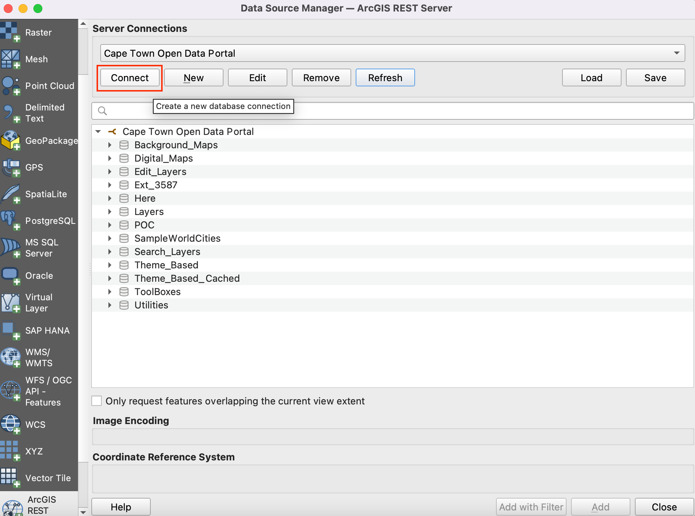
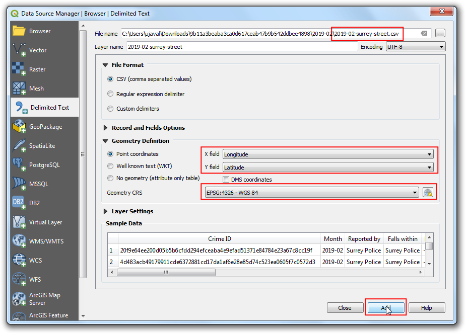
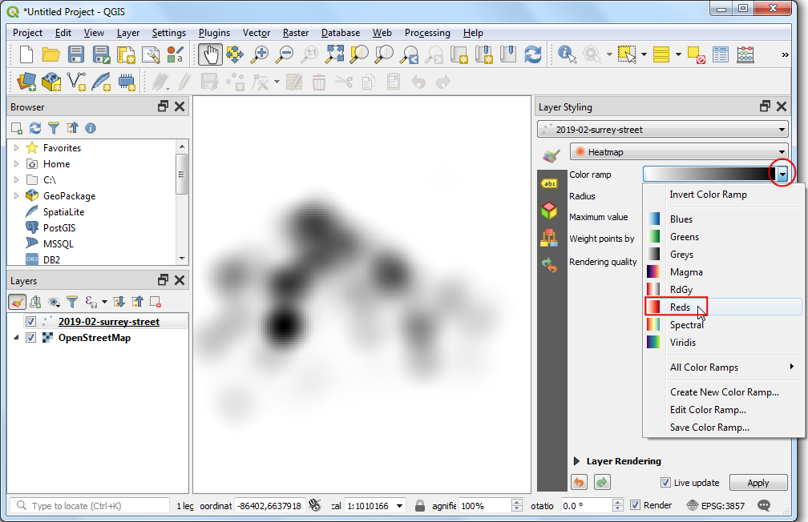
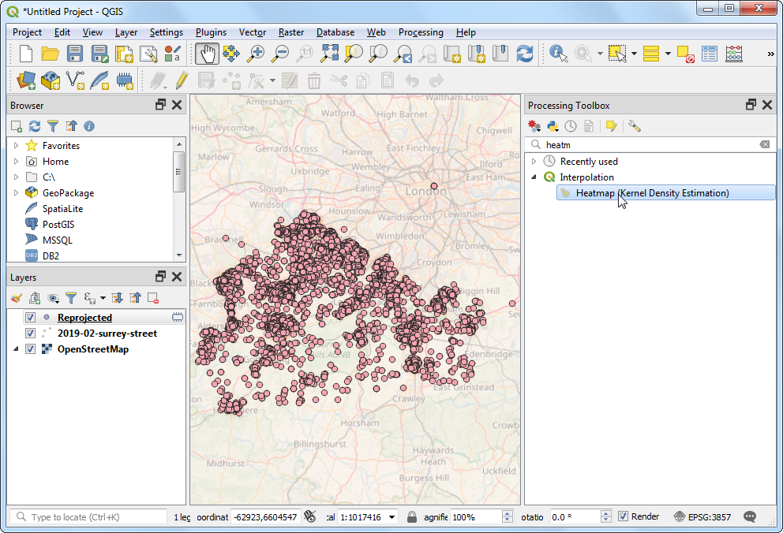
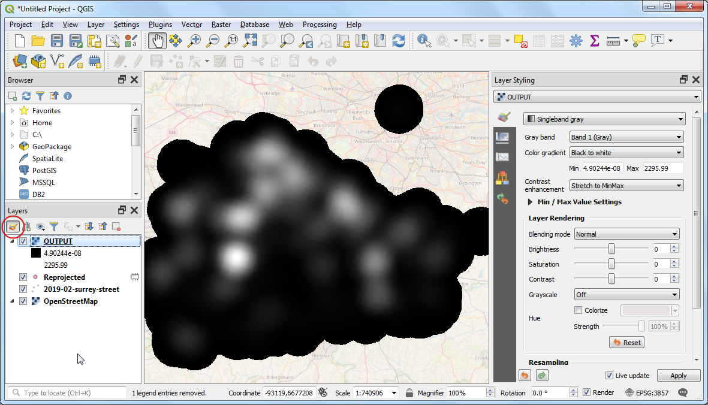
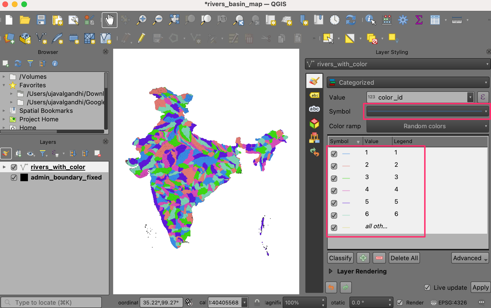

Creación de un mapa de uso de la tierra (QGIS3)¶
Las designaciones de zonificación definen y regulan qué tipos de usos están permitidos en parcelas específicas y esbozan los requisitos y directrices de diseño y desarrollo. En este tutorial aprenderá a acceder a conjuntos de datos de parcelas, a aplicarles estilos según los atributos de zonificación y a crear un mapa.
Visión general de la tarea¶
Trabajará con un conjunto de datos de parcelas con información de zonificación y creará un mapa que muestre el patrón de zonificación en la región del CBD de Ciudad del Cabo.

Otras competencias que aprenderá¶
Cómo acceder y descargar datos de ArcGIS REST en QGIS.
Cómo extraer objetos espaciales de una capa que intersecta una capa límite.
Cómo fusionar diferentes subcategorías desde el renderizador Categorizado.
Obtener los datos¶
Puede encontrar los datos para el tutorial en el Portal de Datos Abiertos de Ciudad del Cabo - https://odp-cctegis.opendata.arcgis.com. Vamos a importar datos desde el portal utilizando ArcGIS REST URL del servidor y se preparará tres capas se mencionan a continuación .
Capa de zonificación: Un archivo shape de polígonos con el código de zonificación y la descripción de las parcelas que tienen una única zonificación - recortada en el área del CBD de Ciudad del Cabo.
Capa de zonificación dividida: Un archivo shape de polígonos con el código de zonificación y la descripción de las parcelas con zonificación múltiple, con cada polígono dividido en polígonos de zonas individuales.
Área CDB de Ciudad del Cabo: Un polígono que delimita la zona del CDB de Ciudad del Cabo.
Veamos paso a paso cómo preparar el conjunto de datos para este tutorial.
Vaya al portal de datos - https://odp-cctegis.opendata.arcgis.com/. Buscaremos los datos del CBD de Ciudad del Cabo en la barra de búsqueda y haremos clic para seguir navegando.

Haga clic en Ver todos los detalles para explorar los servicios disponibles para obtener los datos.

Scroll down to find View Data Source and click on the it.

En el Directorio de Servicios REST de ArcGIS, vaya a :guilabel: Inicio y copie la URL de esa página. La URL copiada tiene el siguiente aspecto - https://citymaps.capetown.gov.za/agsext1/rest/services.

Ahora, abra QGIS y vaya a :menuselection: Abrir Gestor de Fuentes de Datos.

La lista de fuentes de datos se ve en el panel izquierdo. Desplácese hacia abajo hasta encontrar . Haga clic en nuevo para crear una nueva conexión al servidor.

In the Connection Details, give the Name
Cape Town Open Data Portaland paste the copied url as an input for URL.
Haga clic en :guilabel: Aceptar y luego en :guilabel: Conectar para ver las carpetas de datos disponibles en el servidor.
Ahora buscaremos en la base de datos las tres capas necesarias para el tutorial. En primer lugar, abriremos la capa
Cape Town CBDen QGIS. Despliegue las carpetas para buscar las capas. La ruta completa a la capa es . Seleccione la capa y haga clic en :guilabel: Añadir.
Cierre :menuselection: Gestor de fuentes de datos para ver la capa añadida al QGIS. Haga clic en :menuselection: Zoom a Capa para centrar y mostrar la capa en el lienzo.

Ahora, añadiremos la capa
Zoningusando Gestor de Fuentes de Datos. Conéctese al «Portal de Datos Abiertos de Ciudad del Cabo» y busque la capaZoning. La ruta completa es . Esta es una capa muy grande, así que asegúrese de marcar la casilla Only request features overlapping the current view extent para evitar cargar todas las prestaciones disponibles en la capa. Si olvida esto, la carga de la capa puede tardar mucho tiempo. Haga clic en Add para abrir en QGIS.
Del mismo modo añadir
Split_Zoningcapa. La ruta completa es - .
Podemos ver que las tres capas de origen están abiertas en QGIS. Queremos recortar las capas
ZoningySplit Zoninga la capa límiteCape Town CBD. En primer lugar, vamos a guardar las tres capas localmente como archivos shape. Haga clic con el botón derecho en la capaCape Town CBD. Busque Exportar y haga clic en :guilabel: Guardar objetos espaciales como.
Establezca el formato ESRI Shapefile y vaya a la carpeta local donde desea guardar los archivos shape. Guardaremos todas las capas relacionadas con este tutorial en una única carpeta de datos. Guarde la capa como
cbd. Mantenga el resto de opciones por defecto y haga clic en Aceptar. Del mismo modo exportar otras dos capas comoZoning.shpySplit Zoninga la misma carpeta.
Elimine las capas cargadas desde el servidor. Seleccione las tres capas, y haga clic en :guilabel: Quitar Capa / Grupo icono. Queremos extraer los objetos espaciales de las capas
ZoningySplit Zoningque se cruzan con el límitecbd.
Vaya a de la barra de menús.

En la caja de herramientas, busque el algoritmo :guilabel: Intersección y haga doble clic para abrirlo.

Seleccione
Zoningcomo Capa de entrada ycbdcomo Capa de superposición. Mantenga las demás opciones por defecto y proceda a guardar el resultado en un archivo.
Guarde la capa de salida como
zoning_cbden la carpeta de datos y haga clic en Ejecutar.
Dependiendo de la configuración de Procesos, verá algunos errores o advertencias en la pestaña Registro. La capa de entrada tiene algunas geometrías inválidas y está siendo omitida mientras se ejecuta la intersección. Corregiremos las geometrías de las capas
ZoningySplit Zoningantes de ejecutar la intersección para extraer todas las geometrías.
Elimine la salida de intersección de QGIS y de la carpeta de datos. Busque la herramienta en la caja de herramientas de procesamiento. Haga doble clic para abrir.

Seleccione
Zoningcomo Capa de entrada. Mantenga el resto de entradas por defecto y guarde la capa de salida comozoning_fixed.shpen la carpeta de datos haciendo clic en Guardar en archivo. Haga clic en Ejecutar. Repita el proceso para fijar las geometrías en la capaSplit Zoningy guarde la capa con geometrías fijas comosplit_zoning_fixed.shp.
Eliminar
ZoningySplit Zoningcapas. Vamos a seguir adelante con la extracción de objetos espaciales dezoning_fixedysplit_zoning_fixedcapas que se cruzancbd. Busque en la caja de herramientas de procesado y haga doble clic para abrirla.
24.Seleccione Zoning_fixed como Capa de entrada y cbd como Capa de superposición` para realizar la intersección como se describe en los pasos 18 y 19. Guarde la salida como zoning_cbd y repita lo mismo para la capa split_zoning_fixed y guarde la capa de salida como split_zoning_cbd. Guarde la salida como zoning_cbd y repita lo mismo para la capa split_zoning_fixed y guarde la capa de salida como split_zoning_cbd.

Para mayor comodidad, puede descargar directamente una copia de las tres capas preprocesadas desde los siguientes enlaces:
Procedure¶
Open QGIS. Click icon to add layers to work on for the tutorial.

Switch to the Vector tab and use the browsing button to navigate to the folder where you have kept the processed shapefiles.

Select
cbd.shp,zoning_cbd.shpandsplit_zoning_cbd.shpfiles and click Open.

You will see all three file paths in the text box beside Vector Dataset. Click Add followed by Close.

As we work on the exercise, it is important to save our work. Go to .

Save the project to the data directory as landuse_map.qgz file. The QGIS Project file contains references to the data layers and saves styles, map templates etc.

Select the
zoning_cbdlayer and click the Open Attribute Table button in the Toolbar. Note that the attributeINT_ZONE_Chas the zoning codes andINT_ZONE_Dhas the zoning description. Close the attribute table.

Now let’s style the layer based on these attributes, so the parcels with the same zoning codes are styles in the same color. Click the Open the Layer Styling panel button in the Layers panel. Click the dropdown button next to Single Symbol.

Select Categorized as the renderer. Select
INT_ZONE_Cas the Value. Click Classify.
You will see a series of symbols appear. There is a different color symbol assigned for every unique code in the layer.

Notice that each zoning category has sub-categories. The
General Business (GB)category has further sub-divisions likeGB1,GB2, and so on. For the purpose of this map, we can merge all the sub-categories to a single top-level category. Hold the Shift key and select all sub-categories. Right-click and select Merge Categories.
Repeat the process for
MUandTRcategories. Once merged, we can now change the Legend label to be more descriptive. Click on the Legend label to rename a class.
Enter descriptions of each zoning category based on the values given in the
INR_ZONE_Dcolumn. As you enter those description, you will see the legend of the layer in the Layers panel also updates.
Now we can update the colors and symbology of each category. Click on the Symbol for a category.

Change the Fill color and Stroke color of the symbol to a color of your choice.

Repeat the process for each category. The last category is all other values. This category contains all parcels which have NULL values. This is because those parcels have multiple zoning categories attached to them and are represented in the split_zoning_cbd.shp layer. We do not need them in this layer. Select it and click the - icon to remove that category.

Next, select the
cbdlayer. Change the symbol to Simple Line and increase the Stroke width.
The
split_zoning_cbd.shplayer contains all parcels that were missing zoning codes in the zoning_cbd layer. The attribute table and values for the zones in thesplit_zoning_cbdare the same as thezoning_cbdlayer. Instead of configuring the symbology for this layer manually, we can copy/paste the styles. Select the zoning_cbd layer, right-click and select .
Now select the newly added
split_zoning_cbdlayer, right-click and select .
You will see the same symbology being applied to the polygons in the
split_zoning_cbdlayer. The styling and legend are complete now.
We have our layers styled and legend labels created. Now let’s create a map using these styled layers along with map elements like, scale bar, north arrow, labels etc. QGIS comes with a Print Layout that allows composing maps. Go to . When prompted for a name, you can leave it blank and click OK.
In the Print Layout window, you will see a canvas. Right-click and select Page Properties.

Set the Orientation to
Portrait. Next, go to .Hold the left mouse button and draw a rectangle on the canvas. This is the map frame which will contain the map from the main QGIS window. In the Item Properties tab, use the Interactively Edit Map Extent icon to pan/zoom the content of the map frame.

Scroll down in the Item Properties tab and check the Frame option. Expand it and select a Color for the frame border. You can also increase the Thickness.

The map frame is now ready. Let’s add other elements. Go to .
Drag a rectangle where you want to place the legend. Once added, scroll down in the Item Properties tab and un-check the Auto update button so we can manually edit the legend items.

We have 2 layers with identical legends, so we can remove one of them. Select the
split_zoning_cbdlayer and click the Remove selected item(s) from legend icon. Similarly removecbdlayer from the legend.
Right-click the
zoning_cbdlayer and check the Hidden option.
Scroll down and expand the Columns section. Check the Split layers option and increase the Count to 2.

Scroll down further to the Spacing section. Adjust the spacing between different elements till the legend is clearly legible.

You can change style and size of the fonts in legend from Fonts and Text Formatting properties. When done, go to . Drag a rectangle where you want to place the element on the map.

Pick a symbol of your choice. Scroll down and expand the SVG Parameters. Change the Fill color and Stroke color as per your choice.

Now we will add a Scale Bar. Go to . Drag a rectangle where you want to place the element on the map. Adjust the Style and Segments parameters for the scale bar.

Our map needs a title and other information labels. Go to .

Enter a map title in the Main Properties section. Click the Font button under Appearance section to adjust the font size and style.

Add other labels indicating the data source and your name. Lastly we will finish our map by adding a frame around the label block. Go to .

Draw a rectangle. Click the symbol for Style and set the Fill Color to transparent and Stroke color to match other frames.
Once you are satisfied with your composition, you can export the result. Go to . Save the PDF in your data folder as
capetown_zoning_map.pdf.
If you want to give feedback or share your experience with this tutorial, please comment below. (requires GitHub account)